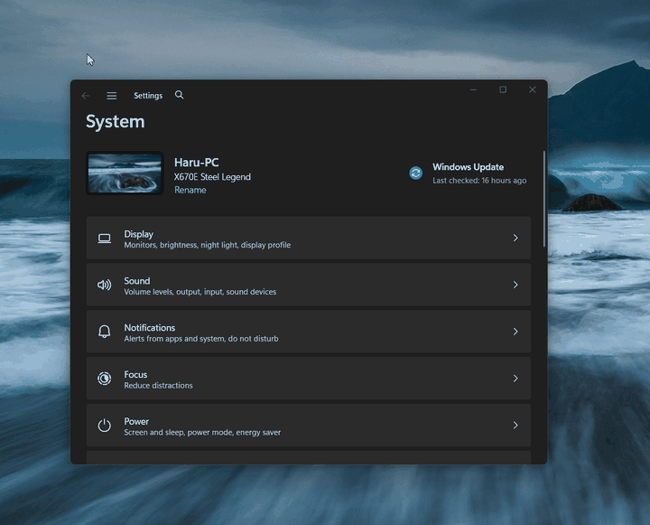

Move any window by dragging it from anywhere with Win / Alt + mouse.

Body, buttons, anywhere — the whole window follows.
Pick your modifier in the tray menu.
Runs as administrator, moves admin windows too.
No Start menu popups, no stuck keys, plain clicks untouched. Esc cancels.
Logon task with highest privileges — no UAC prompt in daily use.
Installer in English / 한국어 / 简体中文. Open source (MIT).
Hold Win, press the left mouse button anywhere on a window, and drag. Release the button (or Esc) to drop. Change the modifier, toggle autostart, or quit from the tray icon.
SmartScreen warns on first run? The builds are not code-signed. Verify you downloaded from the official releases page, then choose “More info → Run anyway”.
Antivirus flag? AnyMove uses global input hooks (no keystroke logging, no network). False positives happen with this technique.
Portable vs installer? The installer registers autostart; the portable ZIP just runs (UAC prompt on each launch).